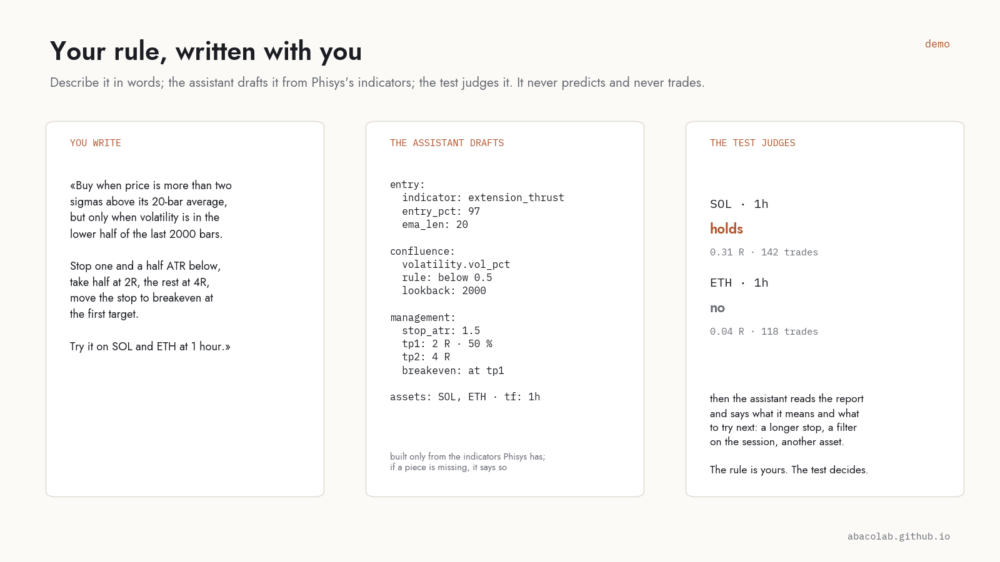

Your rule, written with you
You know what you want to test; writing it as a rule the engine can run is the part that stops most people. The assistant inside Phisys does that part, from Phisys's own indicators, and then reads the report with you.

What it does
- Writes the rule. «Buy when price is two sigmas above its 20-bar average, only when volatility is in the lower half; stop 1.5 ATR, half at 2R, the rest at 4R.» The assistant turns that into a rule assembled from Phisys's indicators, with every parameter visible, and sends it to the test.
- Explains any rule. Ours or yours: what each piece measures, what it does not, where the parameters bite.
- Reads the report. What the evidence means, where the rule held and where it did not, and what to try next: a longer stop, a session filter, another asset. Each suggestion is a new test, never a conclusion.
- Says when a piece is missing. It builds only from indicators Phisys has. If your idea needs one it does not have, it says so instead of inventing it.
Your key, your machine
The assistant runs on your server with your own Anthropic API key, kept there like your exchange keys. You pay the model directly, a few cents a rule; we never see the key or the conversation.
What it never does
It never predicts a price, never sends a signal, never places an order, and never calls a result good before the test has. The rule is yours, the test is the judge; the assistant is the hand that writes.
Why it is in Phisys
Because the gap between a trader with an idea and a rule the engine can run is exactly where most ideas die, or get tested badly. Closing that gap is what makes the test usable by someone who does not program.